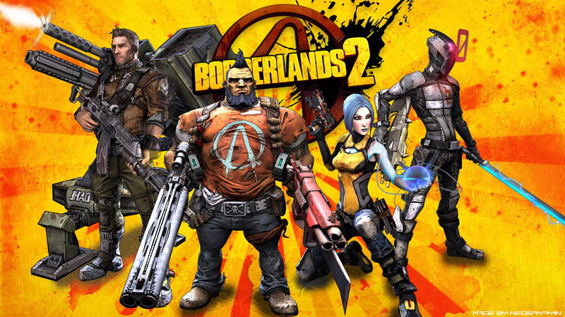

Um leikin
Leikurinn sem ég ætla fjala um heitir Borderlands 2 og er co-op rpg loot em up sem var developað af gearbox og pubplishað af 2k. ég ætla fjala um sögu leikins og hvernig gameplay leikurinn hefur og hvað gefur leiknum svo mikið replaiability.
Leikurinn var gefin út september 18 2012 ok er búinn að vera uppfærður alveg til núna en hann var öruglega að vera uppfærður í seinasta skiptið sitt eða í mjög lángan tíma víst það er nýr að vara koma í september 2019 (á epic games þannig bíða 6 mánuði fyrir steam ver).
flestir sem mundur spilla leikin væri karlar en það er hægt að segja með alla leiki. aldurin gæti alveg verið að 16 til 30 eða 40. áhugamálin eru bara leikir eins og er með flesta sem spilla leiki en fyrir genre áhugamál væru það Grindy shoot em up með RPG elements og mjög mikið af replaiability.
Leikurinn hefur þróast mjög vel fyrsti leikurinn í seríuni af borderlands var sæmilegur en frekar sljór og blíður, hann varð líka mjög repetative ef maður spillar hann, svo kom út Borderlands 2 og eftir að hafi gengið ótrulega vel að auglýsa leikin.
Framtíðin fyrir leikin er ekki of mikil víst það er að fara gefa út nýjan og það var að uppfæra hann seinast í apríl og mun öruglega ekki vera neit gert meira með hann, en það er þannig eftir að hafa gefið út sirka 12~ dlcs fyrir ein leik (fylgja með eigilega öll goty ver)
Um Borderlands 2 söguna

Saga Borderlands 2 fjallar um mann sem heitir Handsome jack sem er leiðtogi fyrirtækja sem heitir Hyperion, og barátu "Vault hunters" sem er playerin við hann jack sem er með heilan her af vélmennum og influence yfir allt
Leikurinn gerist á plánetuni Pandora sem er hæettuleg pláneta það geta verið allt frá morðingjum, mutated skrímsli, vélmenni svo mjöööööög mikið af sprengjum
Hann Handsome Jack vil drepa alla "Bandits" á pandoru fyrir hvað gerðist við hann og reynir að opna Vault sem er sagt að vera með fullt af Loot og byssum en í raun er einhvað Skrímsli inn í þeim og hann Jack veit það svo nokkrir aðrir sem eru að reyna að stoppa hann.
Jack tellur sig að vera hetja, bjargari Pandora en það er á raun og veru ekki. Leiðir hans sem hann fer að gera til að komast að vaultinu er blóðugt
Borderlands 2 "Hetjur"
Borderlands inniheldur fjóra playable characters fyrir sem vilja spilla leikin og þeir allir spilla öðruvísi og eiga öruglega eftir að spilla einhvað eins og þér langar
Axton the Commando
Axton er commando sem fjallar um að spilla í kringum turretin sín, characterin er oft talin til að vera aumasti af þeim fjörum sem er gefið valmöguleikan á að spilla en það er alls ekki satt, hann getur verið eitt af þeim sterkustu af þeim eða aumasti það fer bara eftir hvernig þú spillar hann
Salvador the Gunzerker
Salvador er dual wielding dvergur sem er spillað með því að reyna drepa allt eins fljótt er með sitt duel wielding sem gefur honum miklan kraft víst að sumar byssur virka mjög vel ef notaðar báðar í einu
Maya the Siren
Maya er siren sem getur stjórnað floið af stríðinu sem er að gerast hún virkar mjög vel að spilla með félögum sínum víst það er hægt að upgrada hana í kringum support role en samt getur en þá alveg höndlað sér í barátu
Zer0 the Assassin
Zero mundi vera stealth character en samt ekki hann getur verið mjög sterkur ef maður notar snipera lángt í burtu en getur verið spillaður sem mjög aggresive assassin sem getur haldið sér á lífi þökk sínu special ability